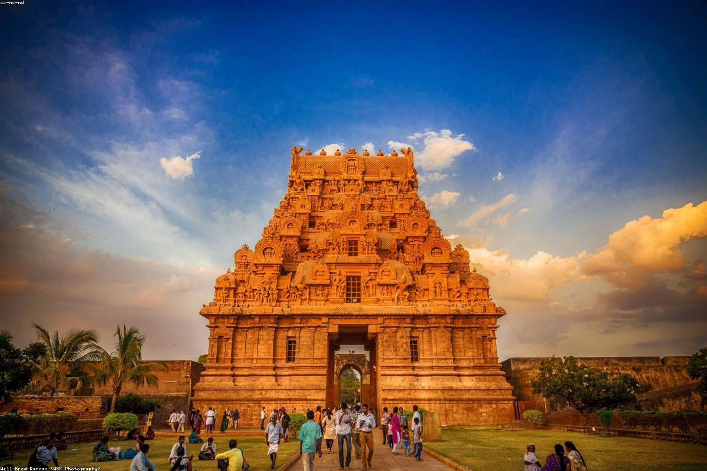

Tamil Nadu
Tanjore, or Thanjavur, is the cultural capital of Tamil Nadu and the heart of Chola history. Dominating the landscape is the Brihadisvara Temple, one of the three Great Living Chola Temples and a testament to the supreme architectural skill of Rajaraja Chola I. Tanjore is famous for its namesake paintings characterized by gold leaf work, its traditional dancing dolls (Thalayatti Bommai), and as a major center for Carnatic music and Bharatanatyam. The city is also known as the "Rice Bowl of Tamil Nadu" due to the fertility provided by the Kaveri river delta, creating a landscape of lush green fields and ancient espiritual grace.
Tanjore is located in the Kaveri Delta region of Tamil Nadu.
The best time to visit is from October to March. The Chola era festivals are great cultural experiences.
By Air: Tiruchirappalli International Airport (approx. 60 km) is the nearest airport.
By Train: Thanjavur Junction is well-connected to Chennai and other major cities.
By Road: Very well-connected via National Highways; regular buses available from Trichy, Chennai, and Madurai.
- Wear comfortable walking shoes and carry water when visiting the Big Temple complex.
- Hiring a guide at the Big Temple is highly recommended to understand its geometric and acoustic marvels.
- For Thanjavur paintings, look for shops that offer a certificate of authenticity.
- Try the local Tanjore thali, known for its variety of vegetables and authentic traditional preparations.